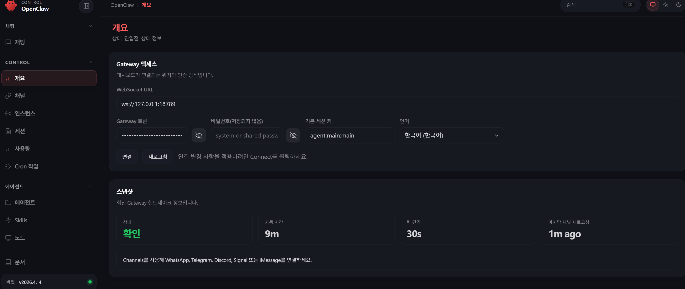

System Design
Remote AI Agent
-
Main/Sub 구성
- Max 2개 (Main + Sub)
- Min 1개 (Main/Sub 동시)
-
Main AI Agent
-
역할: 코드 생성, 문서 생성
-
Sub AI Agent
-
역할: 코드 리뷰, 테스트 분석, 테스트 문서 작성
-
Agent (default)
- Main: Claude (코드/문서 생성)
- Sub: Codex (리뷰/테스트 분석)
Gemini/Copliot/이외 더 고려
Local AI Agent
-
Local AI Agent
- Sub AI Agent로 대체 가능
- Local로 동작할 경우 아래로 구성
-
Agent 구성방법
- Ollama (Windows / Linux / Mac)
- MLX (Mac only)
- vLLM (고성능 Local / Server)
-
Agent 모델 선택
- 각 목적에 맞게 선택
-
Local 사용목적
- Remote API 비용절감 (Main AI/Sub AI)
- Local 반복 자동화
- CI/CD 후 CT 주목적
최근에는 Remote AI만으로도 대부분 가능하며, 비용 부담이 없다면 Local 대신 Remote 중심으로 운영.
AI Agent Working
-
AI Agent 구조
- Main AI: 코드 생성, 문서 생성
- Sub AI: 코드 리뷰, TEST 분석, TEST 문서 작성
- Local: 실행 전담 + result.json 확인 + 에러 시 반복 실행 (기본: Ollama)
- User: 최종 승인
-
AI Agent 와 Openclaw 연결
- openclaw
- 각 Channel 연결
- E-Mail 자동발송
- Github 비롯하여, Slack 과 연결
Design Principles
Loose Coupling — Minimal Agent Interference
- Agent 간 직접 호출 없음 —
result.json을 매개로 연결 - Local AI: Tool 실행 후
result.json저장, 이후 관여 없음 - Sub AI:
result.json을 읽어 감시, 에러 시에만 개입 - 각 Agent는 자신의 역할 범위 밖에 간섭하지 않음
Local AI → result.json → Sub AI
(실행) (매개) (감시·분석)
| 원칙 | 내용 |
|---|---|
| 단방향 데이터 흐름 | Local AI → JSON → Remote Sub, 역방향 없음 |
| 역할 분리 | Local AI: 실행·반복 / Sub: 깊은 분석·문서 |
| 반복 실행 | Local AI가 result.json 확인 후 에러 시 재실행, 여러 TEST 반복으로 문제 패턴 수집 |
| 에러 시에만 개입 | 정상 완료 시 Sub는 완료 보고만, 불필요한 호출 없음 |
| Remote Agent 최소화 | Max 2개 (Main + Sub), 1개 구성도 가능 |
Remote Agent Configuration
| 구성 | Remote Agent | Main 역할 | Sub 역할 |
|---|---|---|---|
| 2-Agent | Main + Sub | 코드 생성, 문서 생성 | 코드 리뷰, TEST 분석, TEST 문서 작성 |
| 1-Agent | Main only | 코드 생성, 문서 생성, 코드 리뷰, TEST 분석, TEST 문서 작성 | — (Main이 대행) |
- Main: 코드 생성 · 문서 생성 담당, MCP 미접근
- Sub: 코드 리뷰 · TEST 감시·분석 · TEST 문서 작성 담당,
log_analyzer·test_result접근 - 1-Agent 구성 시 Sub Tool(
log_analyzer,test_result) 권한을 Main에 부여

Deployment Diagram
Version A — With OpenClaw
OpenClaw이 채널 담당, MCP는 channels() 미사용.
graph TD
subgraph UserCLI["Local User"]
MainAICLI["Main AI CLI"]
SubAICLI["Sub AI CLI"]
VSCode["VS Code · Copilot"]
end
subgraph Remote["Remote Cloud"]
MainAI["Main AI API"]
SubAI["Sub AI API"]
end
subgraph LocalWSL2["Local WSL2"]
OpenClaw["OpenClaw\n문서 생성 · 공유 · 알림"]
end
subgraph LocalWindows["Local Windows 11"]
LocalAI["Local AI"]
subgraph MCPTools["MCP Tool Server"]
Build["build_tool()\nmake · cmake · bitbake"]
Flash["flash_tool()\nOpenOCD · JLink · dfu-util"]
Uart["uart_capture()\npyserial · minicom"]
Qemu["qemu_spawn()\nQEMU instance"]
LogA["log_analyzer()\noops · panic · assert"]
Reg["reg_dump()\n/dev/mem · devmem2 · debugfs"]
TestR["test_result()\nTEST RESULT 문서 생성"]
end
end
subgraph Channels["Remote Channels"]
GitHub["GitHub\nCopilot PR Review"]
Slack["Slack AI"]
EMail["E-Mail"]
end
MainAICLI --> MainAI
SubAICLI --> SubAI
VSCode -->|Copilot| GitHub
MainAI --> OpenClaw
SubAI --> OpenClaw
LocalAI --> OpenClaw
LocalAI -->|HTTP| MCPTools
SubAI -->|HTTP| MCPTools
OpenClaw -->|API| GitHub
OpenClaw -->|API| Slack
OpenClaw -->|API| EMail Version B — MCP Only
MCP Server가 Tool 라우팅 + 문서 생성·공유·알림까지 담당하는 단순화된 구조.
graph TD
subgraph UserCLI["Local User"]
MainAICLI["Main AI CLI"]
SubAICLI["Sub AI CLI"]
VSCode["VS Code · Copilot"]
end
subgraph Remote["Remote Cloud"]
MainAI["Main AI API"]
SubAI["Sub AI API"]
end
subgraph LocalWindows["Local Windows 11"]
LocalAI["Local AI"]
subgraph MCPTools["MCP Tool Server"]
Build["build_tool()\nmake · cmake · bitbake"]
Chan["channels()\nGitHub · Slack · E-Mail"]
Flash["flash_tool()\nOpenOCD · JLink · dfu-util"]
Uart["uart_capture()\npyserial · minicom"]
Qemu["qemu_spawn()\nQEMU instance"]
LogA["log_analyzer()\noops · panic · assert"]
Reg["reg_dump()\n/dev/mem · devmem2 · debugfs"]
TestR["test_result()\nTEST RESULT 문서 생성"]
end
end
subgraph Channels["Remote Channels"]
GitHub["GitHub\nCopilot PR Review"]
Slack["Slack AI"]
EMail["E-Mail"]
end
MainAICLI --> MainAI
SubAICLI --> SubAI
VSCode -->|Copilot| GitHub
LocalAI -->|HTTP| MCPTools
SubAI -->|HTTP| MCPTools
Chan -->|API| GitHub
Chan -->|API| Slack
Chan -->|API| EMail Component Details
1. User Access
브라우저에서 http://127.0.0.1:18789 로 OpenClaw Dashboard에 접속합니다.
Prompt를 입력하면 Orchestrator가 작업 유형에 맞는 Agent를 선택해 라우팅합니다.
2. OpenClaw Orchestrator (WSL2)
- 설치 위치: WSL2 (Ubuntu)
- 역할: Prompt를 받아 적합한 Agent 결정 → MCP 서버로 전달
- 포트:
:18789(Dashboard + Gateway) - WSL2에 설치하는 이유: 공식 권장 환경, Linux 네이티브 안정성
3. MCP Server (WSL2)
- 설치 위치: WSL2 (Ubuntu), OpenClaw와 동일 환경
- 목적: CT(Continuous Testing) — 테스트 실행 · 문제 파악 · 분석 · 문서 작성 · 보고 자동화
- 명령 주체: GitHub Release (webhook 트리거)
- 포트:
:3000 - 구현: Node.js (
mcp-server.js) 또는 Python (mcp_server.py) 선택 - Node.js: 빠른 프로토타이핑, JS 생태계
- Python: pyserial · subprocess 직접 연동, 임베디드 툴체인에 유리
Tool Groups
| Tool | 구분 | 담당 | 실행 |
|---|---|---|---|
build_tool() |
Top-level | Local AI | 1회 |
flash_tool() |
Top-level | Local AI | 1회 |
do_test_<type>_<nn>() |
Top-level | Local AI | 반복 |
uart_capture() |
Sub-function | do_test 내부 | — |
qemu_spawn() |
Sub-function | do_test 내부 | — |
reg_dump() |
Sub-function | do_test 내부 | — |
file_read() |
Sub-function | do_test 내부 | — |
log_analyzer() |
Top-level | Sub AI | 반복 완료 후 1회 |
test_result() |
Top-level | Sub AI | 1회 |
channels() |
Top-level | MCP 내부 | 1회 |
do_test 네이밍: do_test_<type>_<nn> — type: uart · qemu · reg · file / nn: 01, 02 …
Agent별 MCP 접근 범위
| Agent | 구분 | Tool | 비고 |
|---|---|---|---|
| Local AI | 실행 | build_tool, flash_tool, uart_capture, qemu_spawn, reg_dump |
실행만, 분석·판단 없음 |
| Sub AI | 감시·분석 | log_analyzer, test_result |
Local AI 결과 감시 → 에러 시 분석 후 보고 |
| Main AI | 미접근 | — | 코드 생성 · 문서 생성 전담 |
4. Local AI (Windows Native)
- 설치 위치: Windows 11 호스트
- 역할: 로컬 LLM 추론, 인터넷 없이 동작
- 포트:
:11434 - 모델:
llama3.2(범용),codellama(코드 특화) - Windows에 설치하는 이유: GPU 직접 접근으로 추론 성능 최적화
- WSL2 → Windows 연결:
localhost:11434로 투명하게 접근 가능
5. Main AI API (Cloud)
- 설치 위치: 없음 — Anthropic 클라우드에서 실행
- 연결 방식:
ANTHROPIC_API_KEY환경변수 - 용도: 추론, 분석, 장문 컨텍스트 처리
6. Sub AI API (Cloud)
- 설치 위치: 없음 — OpenAI 클라우드에서 실행
- 연결 방식:
OPENAI_API_KEY환경변수 - 용도: 코드 생성, 리팩토링, 언어 변환
Installation Locations
| 컴포넌트 | 설치 위치 | 포트 |
|---|---|---|
| OpenClaw | WSL2 (Ubuntu) | :18789 |
| MCP Server | WSL2 (Ubuntu) | :3000 |
| Node.js 24 | WSL2 (Ubuntu) | — |
| Local AI | Windows 11 (호스트) | :11434 |
| Main AI API | Cloud | — |
| Sub AI API | Cloud | — |
Agent Workflow
Agent 역할은 고정, 아래 순서로 실행.
AI Agent Harness Version A
OpenClaw가 문서 생성·공유·알림을 담당하는 구조.
| 순서 | 작업 유형 | Agent | Orchestrator | User 검토 |
|---|---|---|---|---|
| 1 | 구조 설계 / 작업 분해 | Main AI (Main) | OpenClaw | — |
| 2 | 코드 생성 | Main AI (Main) | OpenClaw | 1차 승인 / 수정 |
| 3 | 문서 생성 | Main AI (Main) | OpenClaw | 2차 승인 / 수정 |
| 4 | 코드 리뷰 / 회귀 위험 지적 / patch 초안 | Sub AI (Sub) | OpenClaw | 3차 승인 / 수정 |
| 5 | GitHub PR 요청 | GitHub | OpenClaw | — |
| 6 | PR Review | Sub AI (Sub) + GitHub Users | OpenClaw | 4차 승인 / 수정 |
| 7 | TEST 분석 | Sub AI (Sub) | OpenClaw | 5차 승인 / 수정 |
| 8 | TEST 문서 작성 | Sub AI (Sub) | OpenClaw | 6차 승인 / 수정 |
Local AI: 각 단계에서 MCP Tool(
build_tool,uart_capture,qemu_spawn,reg_dump) 실행 담당
AI Agent Harness Version B
MCP Server 내부에 Channel 추가, Orchestrator 제거 후 단순화된 구조.
| 순서 | 작업 유형 | Agent | Orchestrator | User 검토 |
|---|---|---|---|---|
| 1 | 구조 설계 / 작업 분해 | Main AI (Main) | CLI | — |
| 2 | 코드 생성 | Main AI (Main) | CLI | 1차 승인 / 수정 |
| 3 | 문서 생성 | Main AI (Main) | CLI | 2차 승인 / 수정 |
| 4 | 코드 리뷰 / 회귀 위험 지적 / patch 초안 | Sub AI (Sub) | CLI | 3차 승인 / 수정 |
| 5 | GitHub PR 요청 | GitHub | MCP | — |
| 6 | PR Review | Sub AI (Sub) + GitHub Users | MCP | 4차 승인 / 수정 |
| 7 | TEST 분석 | Sub AI (Sub) | MCP | 5차 승인 / 수정 |
| 8 | TEST 문서 작성 | Sub AI (Sub) | MCP | 6차 승인 / 수정 |
Local AI: 각 단계에서 MCP Tool(
build_tool,uart_capture,qemu_spawn,reg_dump) 실행 담당
Related
- agents/claude.md — Main AI 설정 예시
- agents/ollama.md — Local AI 설정 예시
- agents/codex.md — Sub AI 설정 예시
- mcp/mcp_server.md — MCP 서버 설정
- environments/window_wsl2_setup.md — WSL2 설치 실험
- agents/ollama_setup.md — Local AI 설치 실험